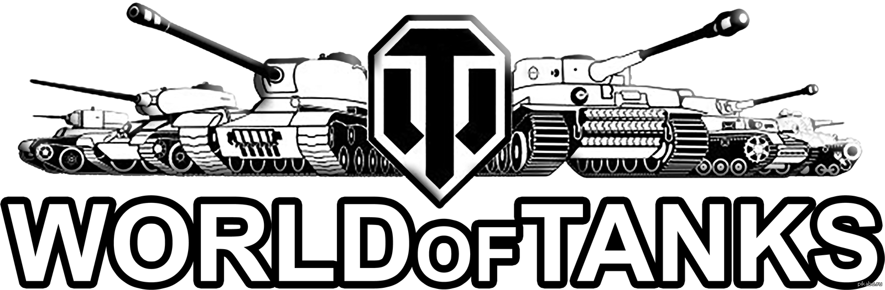
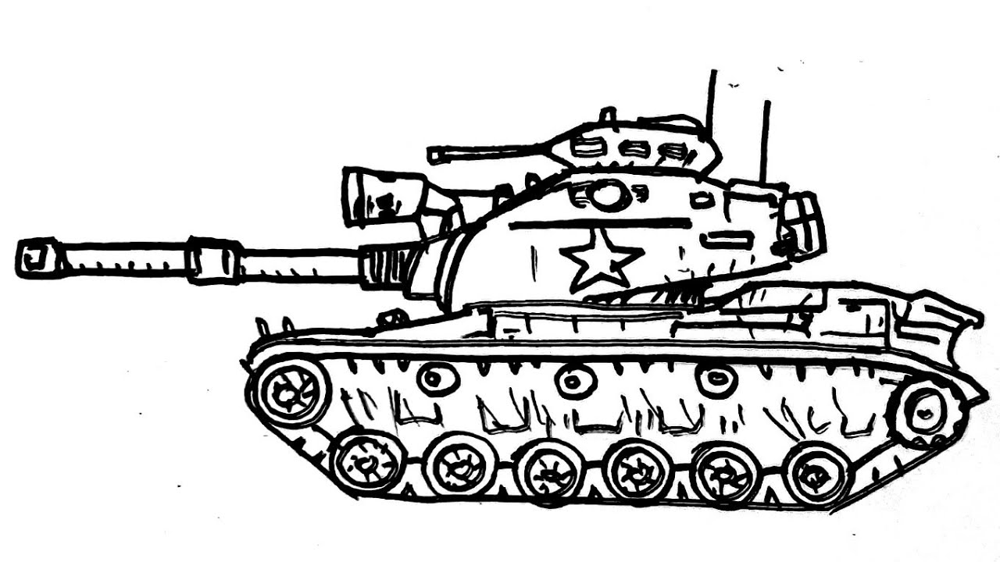
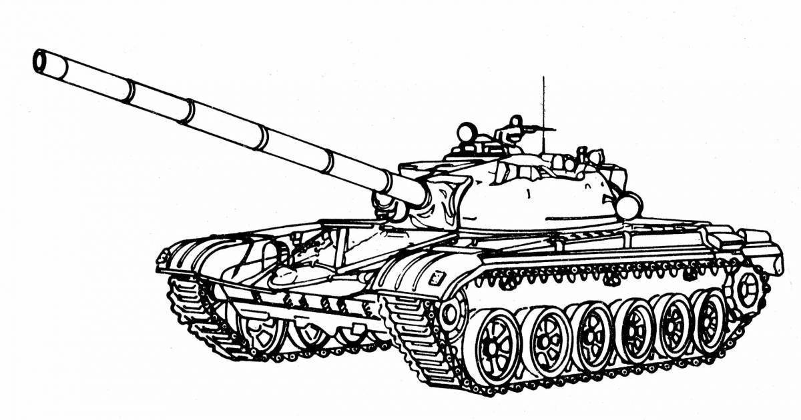
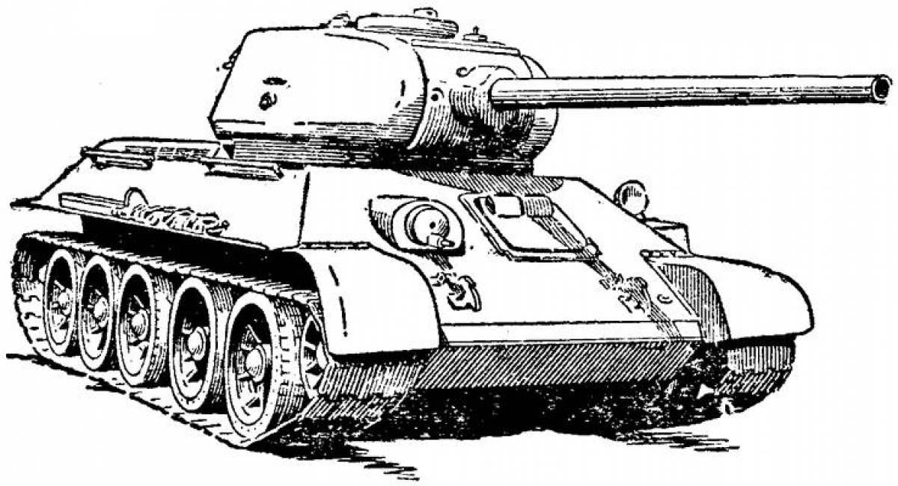
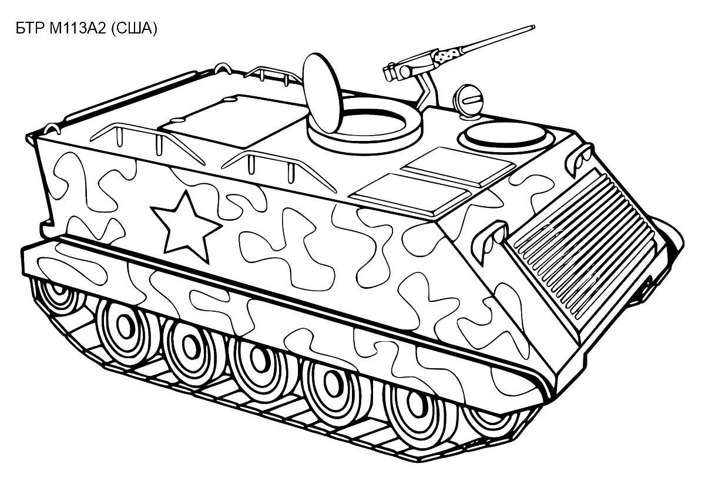
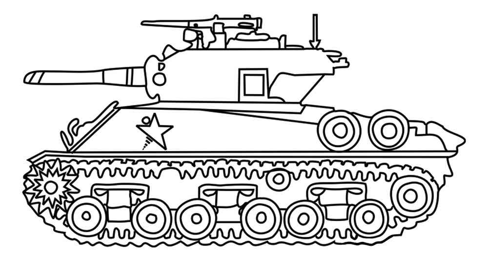

В пору бывалому морскому волку.
А ну рты не разевать - адмирал на борту!
Старая посудина, но на плаву удержится.
Заголовок №1
Танки стали символом прогресса в военной технике и кардинально изменили способы ведения боевых действий. Их появление в ходе Первой мировой войны стало настоящей революцией на поле боя, так как они позволили преодолеть окопную войну и обеспечили передвижение через баррикады и траншеи, что было невозможно для пехоты...

Заголовок №2 Первая мировая война стала временем экспериментов с бронетехникой. Хотя первый танк был разработан в Великобритании в 1916 году, а затем использовался в боевых действиях на Западном фронте, другие страны быстро начали разрабатывать свои собственные модели. К примеру, Франция выпустила танк "Шар Б", а Германия пыталась внедрить свои бронетранспортеры...

© Черников А.О., группа, 2024-2025
✉ Контакты